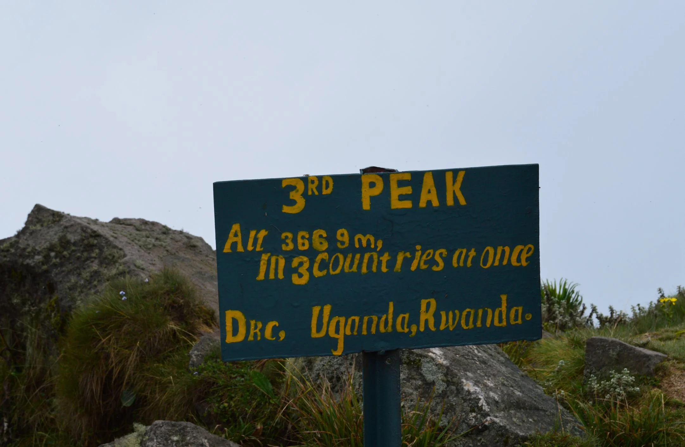

Mount Sabinyo feels exciting from the start. The trail gains height with purpose, ladders and steeper sections keep the body alert, and the ridgeline carries the satisfying sensation that you are climbing not just a mountain, but a borderland of geology and geography. Few hikes in Uganda feel this playful and exposed.
The volcanic setting gives Sabinyo unusual character. The slopes are steep, the scenery is sharp, and the atmosphere remains charged by the knowledge that you are moving through one of East Africa's most dramatic mountain systems. Standing where Uganda, Rwanda, and the DRC meet is a symbolic reward, but the route itself is just as memorable.
Sabinyo is not a soft stroll. That is part of its charm. It keeps trekkers fully engaged and gives back a satisfying sense of achievement.
Why The Ridge Feels So Good
Ridge walking always heightens experience, and Sabinyo uses that beautifully. The mountain invites attention outward and downward at the same time. Every section makes the landscape feel more dramatic, and every pause comes with the pleasure of seeing how far and high you have come.
That sense of progression is what gives the climb its addictive quality.
A Great Add-On To Southwest Uganda
For travelers already heading toward gorillas or golden monkeys, Sabinyo adds another dimension to the region. It proves that the southwest is not only about forests and primates, but about mountain movement, volcanic identity, and the thrill of physically earning a view.
Used well, it can turn a good route into an outstanding one.
Who Will Love Sabinyo Most
Travelers who like ladders, ridges, and a little healthy exposure tend to adore this hike. It is for people who want their scenery paired with a clear sense of effort and adventure.
If you want one of Uganda's most characterful day hikes, Sabinyo is very hard to beat.